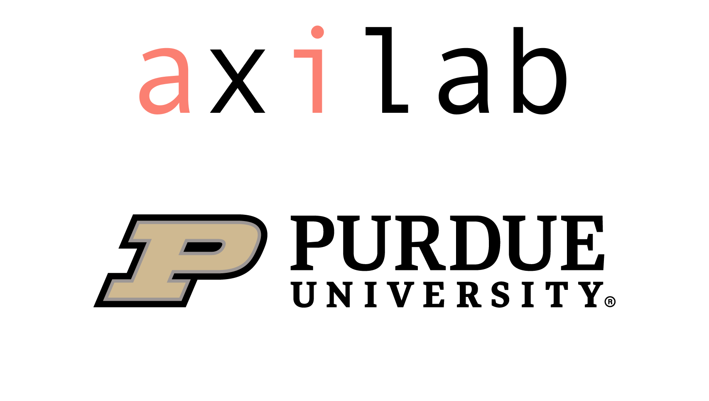
From objects to data models
Module 3 - Concept Modeling
Lecture 3.3
ASM 532, Introduction to Ag Informatics
Ankita Raturi, ankita@purdue.edu
Lecture Outline
- How databases work: object -> data model
- Project: How's it going?
Goal: from universals to particulars.
From abstractions to
real working
code.
Abstraction warmup
How might we represent a plant?
- What attributes?
- Where does the data come from?
- What should it be related to?
- Any operations?
- What about varieties?
- Seed vs seedling vs crop vs product?
- Limits to object modeling?
Models in Software Engineering
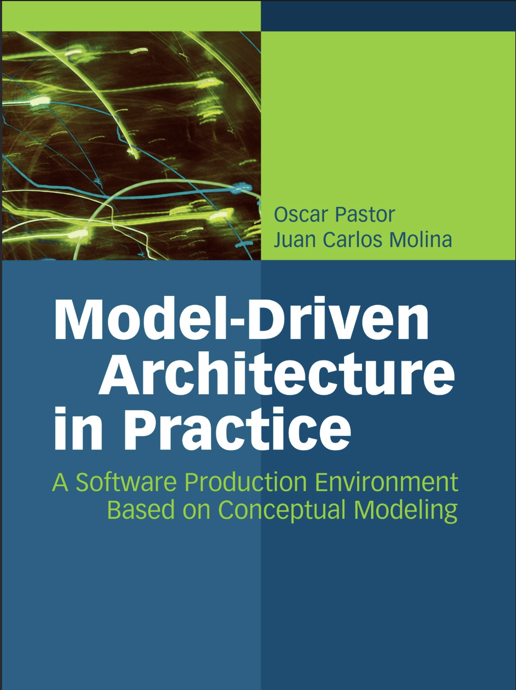
"to represent models of the
real world with computational models used by computers."
"to abstract key concepts, represent
them appropriately, and transform them correctly."
Model-Driven Architecture in Practice, Springer.
The problem of universals
Builds on the philosophical tradition of distinguishing between:
- universals ------ abstractions ------ an animal
- particulars ------ instances ------ my cat newton
Three questions:
- The question of concept:
- nature and functions of the concept, the nature of particulars and their relations with universals; levels of realism as design decisions
- The question of trueness:
- the truth criteria and the connection of universals with particulars;
- evaluation of implementation against specification
- The question of language:
- the nature of signs and their relation with signified entities;
- bridge the semantic gap among users and designers
Lightly paraphrased from: Model-Driven Architecture in Practice, Ch1, Springer.
Reminder: Objects and Entities
- Design writing says object,
the term used in object modeling
When object-oriented programming in Python, this will be called a class. - Database writing says entity,
the standard name for a data model diagram is an entity-relationship diagram (ERD).
This is also a table in SQL.
Farm tracker, object model
Task domain: tracking the locations of my crops and animals
| Object | Attributes | Operations | Related to |
|---|---|---|---|
| Farm | name | add, view | has 1-many Fields. has 0-many Animals. |
| Field | name, acres, field_type (pasture, cropland), note |
add, view | has 0-many plots. If pasture, has 0-many Animals. |
| Plot | name, length, width, planted_date, harvest_date | add, view, plant, harvest | has 0-1 crop |
| Crop | name, days_to_maturity | add, view | - |
| Animal | name, species, breed, birthdate, weight | calculate age, details | - |
| Goat | secret name | same as Animal | is a type of Animal |
| Cow | - | details of its own | is a type of Animal |
Visualizing the data model
For this module and lab, pick one notation and stay in it.
![One relationship drawn six ways, one panel per notation, each joining a Person box to a Location box. Chen puts a Birthplace diamond between them, marked N and 1. IDEF1X uses a dashed line with a filled dot and a hollow diamond. Bachman uses an arrow labelled Born in and Birthplace of. Martin, or Crow's Foot, uses a ring-and-fork at Person and a double bar at Location. Min-Max/ISO writes (1,1) Born in and Birthplace of (0,N). UML labels both boxes as entities and writes 0..N and 1 at the line ends.](img/m3-ERD_Representation.svg.webp)
Entity–relationship model, Wikipedia.
Reminder: Crow's Foot Notation
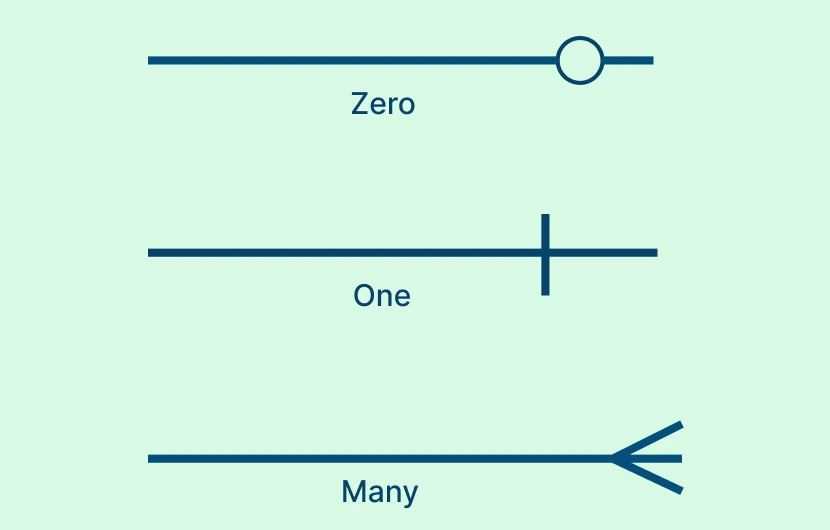
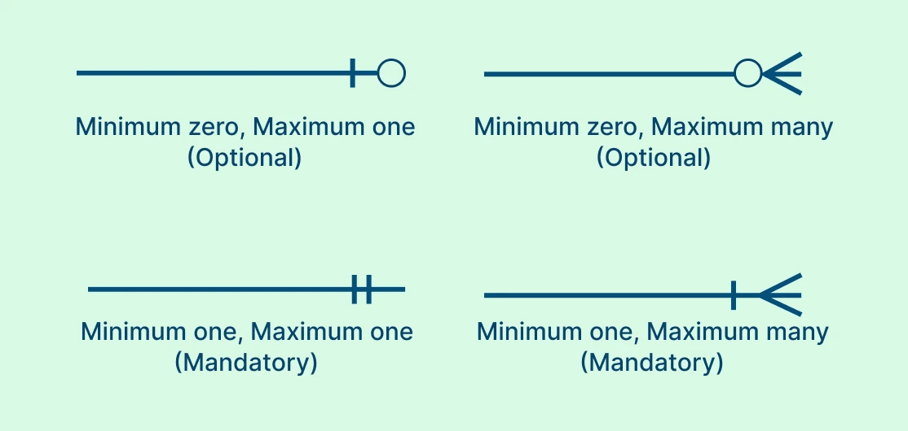
Crow's Foot Notation guide, Creately.
Databases: Relational (SQL)
- All records have a unique identifier, one column = PRIMARY KEY
- Tables are linked based on a lookup "column" = FOREIGN KEY
- Cardinality refers to how many of one thing can relate to
another.
- 1-1: none in our model. e.g., one cow has one ear-tag
- 1-many: one field can have many plots
- many-many: many crops can be grown in many fields - through plots
erDiagram
accTitle: Farm tracker subsample: field, plot, crop
accDescr: Three tables. Field and crop each have a primary key. Plot has its own primary key plus two foreign keys, field_id and crop_id. One field has many plots; one crop is grown in many plots, and a plot can sit empty. Through plot, many crops are grown in many fields.
FIELD ||--o{ PLOT : has
CROP |o--o{ PLOT : "grown in"
FIELD {
int field_id PK
int farm_id FK
lookup field_type "pasture, cropland"
string name
real acres "real = float"
string note
}
PLOT {
int plot_id PK
int field_id FK
int crop_id FK "optional"
string name
int length
int width
date planted_date
date harvest_date
}
CROP {
int crop_id PK
string name
int days_to_maturity
}
Farm tracker, data model
- Each object becomes a table, with its own primary key.
One farm, one or more fields. One farm, zero or more animals.
One field, zero or more plots. If field_type = pasture: one field, zero or more animals; each animal is in zero or one field.
One plot can sit empty, or grow one crop.
One crop can be grown in zero or more plots. - Foreign keys sit on the "many" side:
farm_idon field and animal
field_idon plot and animalcrop_idon plot - Animals can just be part of the farm, or if a field is in pasture, an animal can be in a pasture.
- A table can have two FKs, where one is optional.
- Goat and Cow don't have to be their own table. They can be represented by
a
speciescolumn.
In Python, we'll do something different here.
erDiagram
accTitle: Farm tracker data model
accDescr: Five tables, each with a primary key. One farm has one or more fields and zero or more animals. One field has zero or more plots, and zero or more animals if it is a pasture; each animal is in zero or one field. One crop is grown in zero or more plots, and a plot can sit empty: it has zero or one crop. Foreign keys sit on the many side: farm_id on field and animal, field_id on plot and animal, crop_id on plot. Animal has a species column in place of Goat and Cow classes, and a goat-only secret_name column.
FARM ||--|{ FIELD : has
FARM ||--o{ ANIMAL : has
FIELD ||--o{ PLOT : has
FIELD |o--o{ ANIMAL : pastures
CROP |o--o{ PLOT : "grown in"
FARM {
int farm_id PK
string name
}
FIELD {
int field_id PK
int farm_id FK
lookup field_type "pasture, cropland"
string name
real acres
string note
}
PLOT {
int plot_id PK
int field_id FK
int crop_id FK "optional"
string name
int length
int width
date planted_date
date harvest_date
}
CROP {
int crop_id PK
string name
int days_to_maturity
}
ANIMAL {
int animal_id PK
int farm_id FK
int field_id FK "optional"
string species
string name
string breed
date birthdate
real weight
string secret_name "goats only"
}
Farm tracker, lookup lists
- A lookup list is an attribute whose value must come from a fixed set — a crop type, a soil class, a status.
- Avoids free text with spelling errors!
- Field's
field typeand Animal'sspeciesbecome lookup lists: their own small tables.
erDiagram
accTitle: Lookup tables in the Farm tracker
accDescr: Two lookup tables and the tables that use them. Field type, with the values pasture and cropland, classifies zero or more fields, through field_type_id on field. Species, with the values goat and cow, classifies zero or more animals, through species_id on animal.
FIELD_TYPE ||--o{ FIELD : classifies
SPECIES ||--o{ ANIMAL : classifies
FIELD_TYPE {
int field_type_id PK
string name "pasture, cropland"
}
FIELD {
int field_id PK
int farm_id FK
int field_type_id FK
string name
real acres
string note
}
SPECIES {
int species_id PK
string name "goat, cow"
}
ANIMAL {
int animal_id PK
int farm_id FK
int field_id FK "optional"
int species_id FK
string name
string breed
date birthdate
real weight
string secret_name "goats only"
}
Farm tracker, full data model
erDiagram
accTitle: Farm tracker, full data model
accDescr: Seven tables. Farm has a name. Field has a name, acres, a note, a farm_id foreign key and a field_type_id foreign key to the field type lookup table. Plot has a name, length, width, planted and harvest dates, and foreign keys field_id and an optional crop_id. Crop has a name and days to maturity. Animal has a name, breed, birthdate, weight and a goat-only secret name, with foreign keys farm_id, an optional field_id, and species_id to the species lookup table. One farm has one or more fields and zero or more animals; one field has zero or more plots and, if a pasture, zero or more animals; one crop is grown in zero or more plots, and a plot has zero or one crop.
FARM ||--|{ FIELD : has
FARM ||--o{ ANIMAL : has
FIELD ||--o{ PLOT : has
FIELD |o--o{ ANIMAL : pastures
CROP |o--o{ PLOT : "grown in"
FIELD_TYPE ||--o{ FIELD : classifies
SPECIES ||--o{ ANIMAL : classifies
FARM {
int farm_id PK
string name
}
FIELD {
int field_id PK
int farm_id FK
int field_type_id FK
string name
real acres
string note
}
FIELD_TYPE {
int field_type_id PK
string name "pasture, cropland"
}
PLOT {
int plot_id PK
int field_id FK
int crop_id FK "optional"
string name
int length
int width
date planted_date
date harvest_date
}
CROP {
int crop_id PK
string name
int days_to_maturity
}
ANIMAL {
int animal_id PK
int farm_id FK
int field_id FK "optional"
int species_id FK
string name
string breed
date birthdate
real weight
string secret_name "goats only"
}
SPECIES {
int species_id PK
string name "goat, cow"
}
Building a table: animal
not null = required.
If it is not not null =
optional.
The other six tables follow the same pattern (demo notebook).
The farm data, so far
| farm | |
|---|---|
| id | name |
| 1 | Home farm |
| 2 | River farm |
| field | |||
|---|---|---|---|
| id | name | farm_id | type |
| 1 | North pasture | 1 | pasture |
| 2 | South field | 1 | cropland |
| 3 | River field | 2 | cropland |
| crop | |
|---|---|
| id | name |
| 1 | carrot |
| 2 | lettuce |
| plot | |||
|---|---|---|---|
| id | name | field_id | crop_id |
| 1 | south plot A | 2 | 1 |
| 2 | south plot B | 2 | NULL |
| 3 | river plot | 3 | 2 |
| animal | ||||
|---|---|---|---|---|
| id | name | farm_id | field_id | species |
| 1 | Sunny | 1 | 1 | goat |
| 2 | Bessy | 1 | NULL | cow |
Joins: FK at work
Which crops are growing in which fields?
A join lines up rows from two tables where a key matches:
plot.field_id = field.field_id.
| field | plot | crop |
|---|---|---|
| River field | river plot | lettuce |
| South field | south plot A | carrot |
| South field | south plot B | NULL |
Many crops, many fields: through Plot. left join keeps the
empty plot.join drops rows with no match; left join keeps them.
Insert to DB
Home farm has North pasture and South field (cropland). River farm has River field (cropland).
Our model has two rules: animals only go in pastures, and an animal's farm must match its field's farm. Does the database enforce them?
- Clover: a goat in South field, which is cropland. Accepted.
- Pepper: on Home farm, in River farm's field. Accepted.
- An animal with
species_id99, which doesn't exist? Refused:FOREIGN KEY constraint failed
Joins: what's in the DB?
Which animals are on a different farm from their field?
| name | farm_id | field_farm_id |
|---|---|---|
| Pepper | 1 | 2 |
Clover's farm is right (her field is the wrong type). Bessy has no
field, so the join skips her.
Join one table further, to field_type, to catch
animals outside a pasture: Clover and Pepper.
You will need validation code!
What did the DB force us to decide?
What was vague in the object model?
- "If pasture" needs something to check: a
field_type. - Animals have two routes to belong to a farm: directly and via a pasture.
Animal carriesfarm_idand an optionalfield_id- so they can disagree.
A goat on Farm A, in a field on Farm B? Keep both (barn animals have no field)? Then decide who keeps them consistent!
The diagram can't say "only pastures hold animals" either: nothing stops a goat'sfield_idpointing at cropland. Both rules need validation in code. - Goat and Cow aren't tables. The Animal table needed a
species, andbreedmoves up. - Harvest needed somewhere to land: a
harvest date. Keeping every season's crop would take a Planting object.
What happened to the methods?
- Operations don't become columns.
add, view, plant, harvest, calculate age, details become methods. - Some methods calculate, some change data.
calculate age, details: read what's stored.
plant, harvest set Plot'scrop_id,planted_date,harvest_date. - Don't store what you can calculate.
Animal storesbirthdate, not age.calculate_age()will do the math. - All tables need to Create, Read, Update, Delete
(CRUD).
add, view belong to every table.
Object.
Attribute:type[limits].
Function (input):(output).
Plot.
planted_date:date.
plant(crop):(none).
Animal.
birthdate:date.
calculate_age():(int).
Here lie dragons databases
![A hand-drawn fantasy map of the database world. The Relational Empire fills the west, with SQL Metropolis holding PostgreSQL, MySQL, Oracle, SQL Server and DB2, and the Declarative River running through it. To the north lies the Document Data District with MongoDB, CouchDB, RethinkDB and the ruins of XML databases; in the middle, the Graph Data Peaks with Neo4j, Cypher, SPARQL and Datalog; to the east, the Column-Family District with Cassandra and HBase, and the Key-Value District with Redis, Riak and Voldemort. A NoSQL Danger Zone sits in the south.](img/m3-kleppman-ch02-map-ebook-data-model-landscape.png)
Martin Kleppmann, Designing Data-Intensive Applications, ch. 2, O'Reilly.
Databases: Non-Relational (NoSQL)
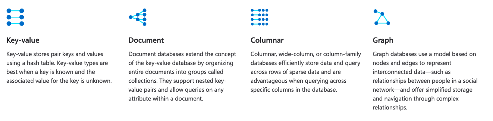
Key-Value e.g., redis. Document e.g., MongoDB. Columnar e.g., Apache Cassandra. Graph e.g., Neo4J.
Learn more about NoSQL dbs, Microsoft Azure.
Relational -> Document -> Graph DB
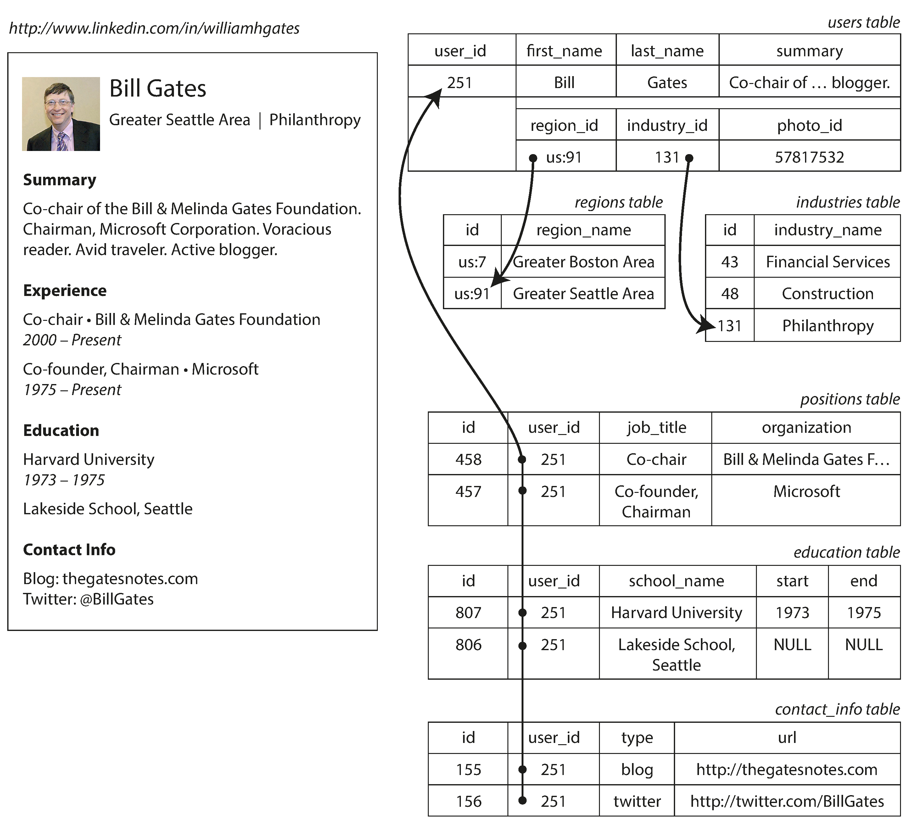
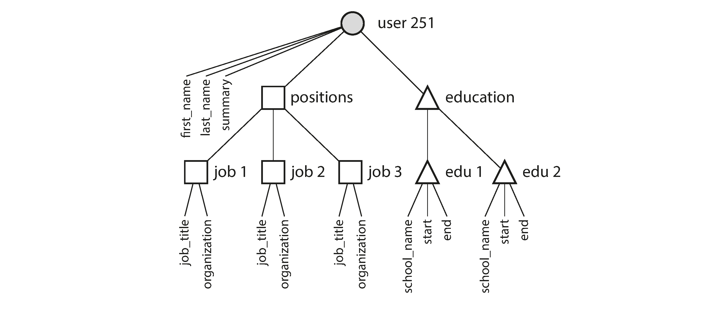
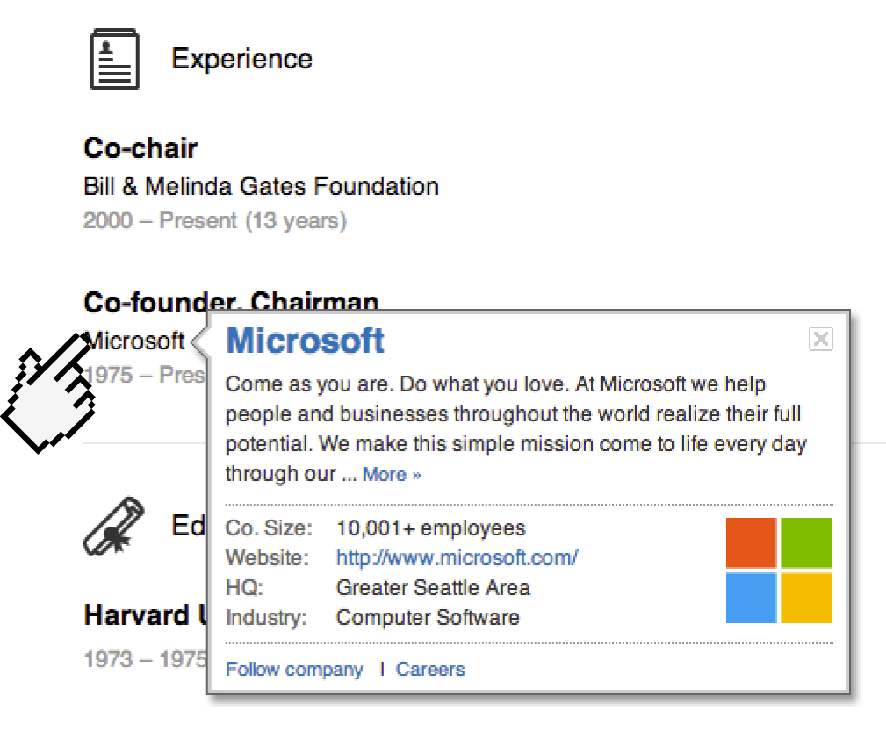
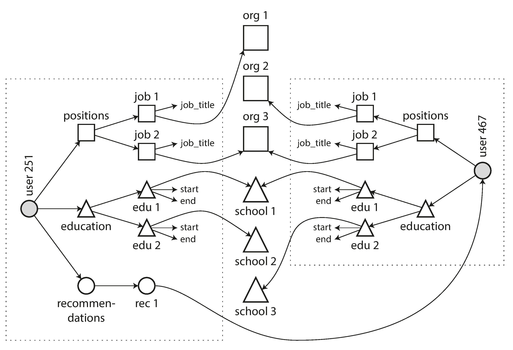
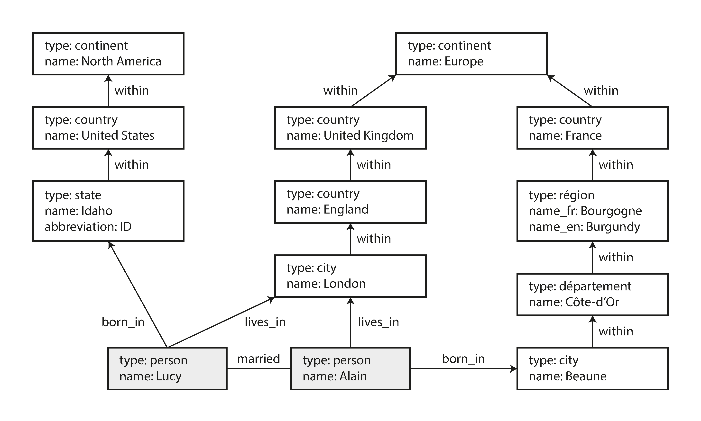
Figure 2-1: "Representing a LinkedIn profile using a relational schema."
Figure 2-2: "One-to-many relationships forming a tree structure."
Figure 2-3: "The company name is not just a string, but a link to a company entity."
Figure 2-4: "Extending resumes with many-to-many relationships"
Figure 2-5: "Example of graph-structured data (boxes represent vertices, arrows represent edges)."
Martin Kleppmann, Designing Data-Intensive Applications, ch. 2, O'Reilly.
Watch for SQL injections
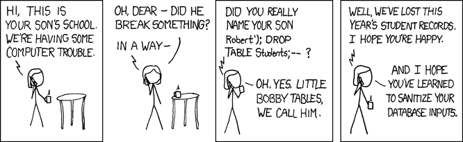
Randall Munroe, "Exploits of a Mom", xkcd, CC BY-NC 2.5.
Project: How's it going?
Check-in on Brightspace.
Questions?
License
-

Introduction to Agricultural Informatics Course by Ankita Raturi, Purdue University is licensed under a Creative Commons Attribution-NonCommercial-ShareAlike 4.0 International License.
- You are free to:
- Share — copy and redistribute the material in any medium or format
- Adapt — remix, transform, and build upon the material
- Under the following terms:
- Attribution — You must give appropriate credit, provide a link to the license, and indicate if changes were made. You may do so in any reasonable manner, but not in any way that suggests the licensor endorses you or your use.
- NonCommercial — You may not use the material for commercial purposes.
- ShareAlike — If you remix, transform, or build upon the material, you must distribute your contributions under the same license as the original.
- No additional restrictions — You may not apply legal terms or technological measures that legally restrict others from doing anything the license permits.